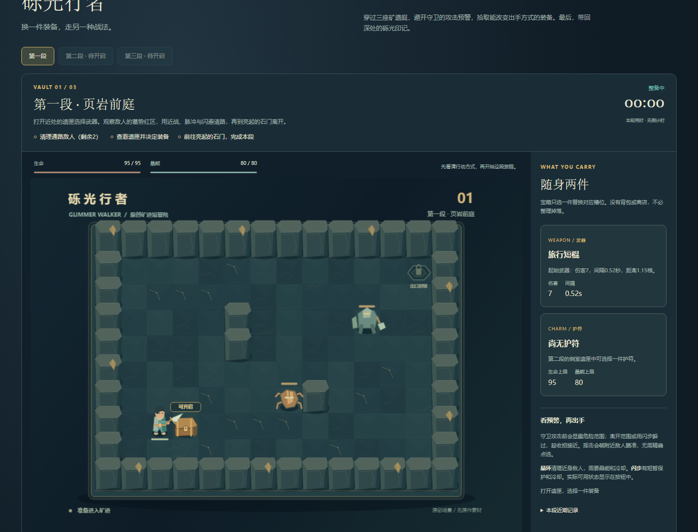
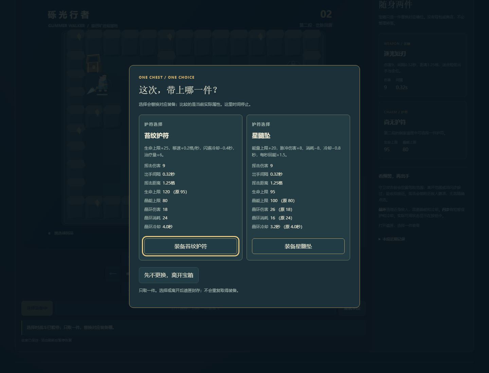
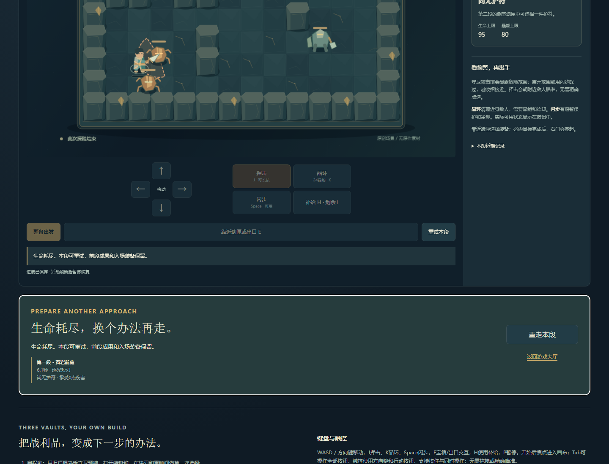
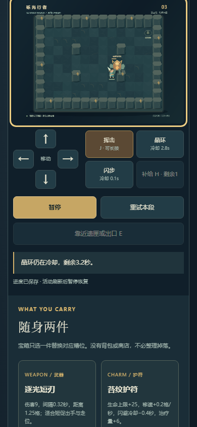
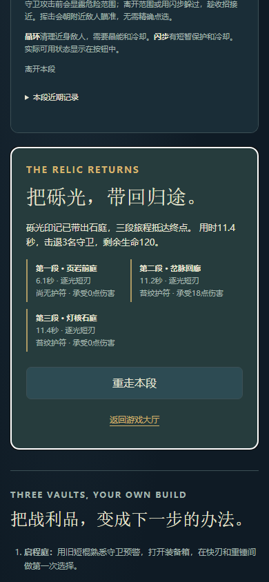

新增第42项原创三庭二维即时战斗小品。参考《暗黑破坏神Ⅱ》的即时战斗、掉落与构筑方向；没有职业树、随机刷装、交易经济或联网。原41项和旧版保留；当前38款活动作品、4款停止/保留，数量不代表精品完成认证。
后续已加入可选“新旅程”确认入口；本次普通UI与完成态夹具分项证据不改变下方首版三关历史结果。
Chromium 1440×1100与390×844 CSS视口。只读全图状态策略约100ms建议一次输入，通过原生键盘、开始/交互/选择/重试按钮操作。模型时钟正常流逝，没有注入生命、时间、胜负、战利品或完成存档。脚本选择快刃＋苔纹护符；其他组合的证据单列为纯模型。
| 段落 | 实际完成时间 | 完成内容 |
|---|---|---|
| 页岩前庭 | 6.13秒 | 开匣选择快刃、击退两名守卫、前往石门 |
| 岔脉回廊 | 11.17秒 | 探索侧室，击退五名守卫，选择苔纹护符；承受18伤害后出门 |
| 灯核石庭 | 11.40秒 | 精英第二阶段实见，取得砾光印记并出门，三段回顾 |
本作是很短的三庭初版。表中是熟练辅助策略的游戏内活动时间，未计暂停、比较装备和阅读；不保证真人时长，不证明难度或趣味成熟，也不以快速脚本成绩推断需要调难度。





纯模型固定1/30秒，策略每0.1秒读状态并保持普通输入。7条路线：首庭两武器；第二庭快刃/苔纹与重锤/星髓各自取侧路护符；第三庭两套组合进入精英第二阶段并通关；第二庭跳过侧路合法出门。两套构筑影响真实间隔、伤害、资源与防护，不是名称替换。
7组针对性检查覆盖装备选择停时和无重复拾取、墙体/视线、冷却与闪避/晶环、伤害统计边界、自然失利、活动/选择/终态恢复、坏快照拒绝。整段三庭进度的入场装备和回顾逐决策恢复另由存储单元验证。 发布前另发现无倒计时模式的存档校验原有一小时上限：离线正常推进清敌后等待至3606.9秒，快照被拒绝。只改存档时间校验为安全数值范围，加入自然模拟长等待和最终结果恢复检查；未改战斗、时间流速或存档格式，未在浏览器实际等一小时。模型几何夹具不冒称普通游玩。
独立浏览器故障夹具令当前key写入抛QuotaExceededError：警告当前进度风险、仍能操作、旧有效字节不变；恢复写入后警告清除。坏JSON在新会话加载前提供，保全原字节且可临时游玩。原生行动按钮Enter与合成blur输入清理分别测试，后者不是实际OS切后台验收。模型、故障夹具与正常通关上下文分开。
断连前完整实现已保存，本轮恢复先确认58258没有监听再启动预览。首次UI适配器把可省略的false行动字段当成必有字段，抛KeyError，尚无关卡完成；改为默认false后从新上下文完成上述旅程，游戏规则未为此修改。初次适配器记录保留。
原始结果：普通UI / 7条模型路线 / 模型边界 / 存储/输入故障夹具。脚本为scripts/test_glimmer_engine.mjs、test_glimmer_routes.mjs、test_glimmer_storage.mjs、test_glimmer_ui.py与test_glimmer_faults.py。
尚未验收真人自由战斗的手感、节奏、平衡与趣味；真实手机多指/性能、真实OS后台行为、屏幕阅读器完整流程和整体审美仍需人工体验。无音频实现。没有新增依赖、服务、凭据或费用。
实现范围与规则 · Blizzard官方参考资料。官方主页本轮工具抓取HTTP403，未将历史来源状态升级为重新核验；未新增销量、评分或原作细节事实。